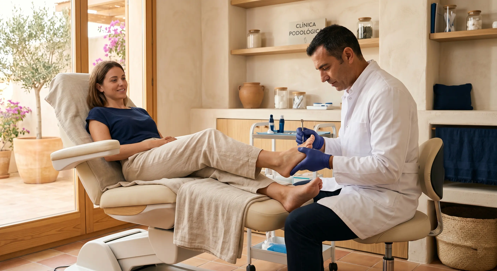

Otras especialidades sanitarias
Más allá de la odontología, Clinilab Pastor es un centro médico integral. Ofrecemos podología concertada con el SAS y consulta de psicología en San José de La Rinconada.
Podología — Tus pies en manos expertas
Nuestro servicio de podología diagnostica y trata cualquier dolencia de tus pies. Estamos concertados con el Servicio Andaluz de Salud (SAS), por lo que parte de los tratamientos pueden estar cubiertos.
Patologías que tratamos
Tarjeta Clinilab: 50 % de descuento en podología para titulares de la Tarjeta Clinilab Pastor.

Psicología en La Rinconada
Disponemos de consulta de psicología en nuestro centro de San José de La Rinconada. Atención psicológica profesional y cercana para adultos, en un entorno confidencial y de confianza.
Para más información sobre los servicios y tratamientos psicológicos disponibles, contacta con nosotros. Te atenderemos sin compromiso.
Tarjeta Clinilab: 50 % de descuento en consultas de psicología para titulares.
Tu salud integral, en un solo centro
Dental, podología, psicología — todo en Clinilab Pastor, en La Rinconada, a 5 minutos de Sevilla.
Pedir cita